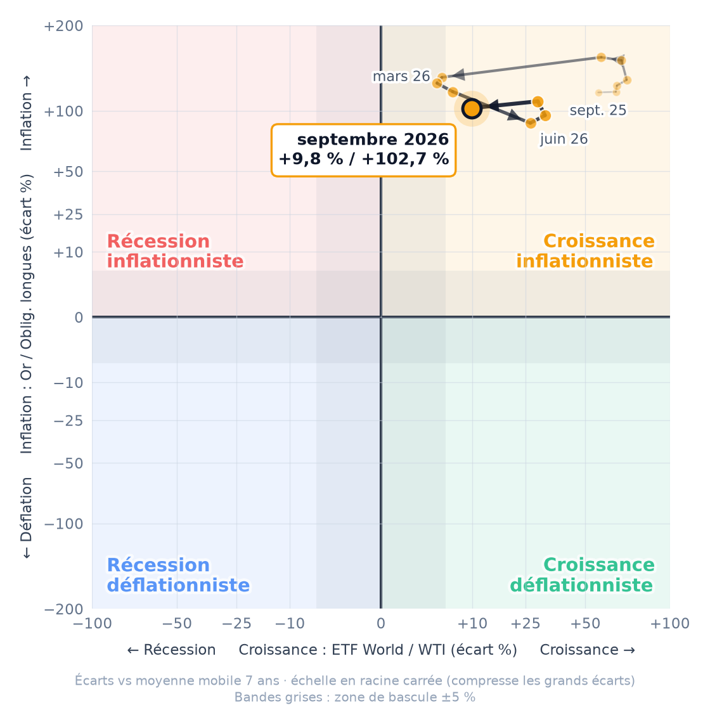

Croissance +9,8 % vs moyenne 7 ans | Inflation +102,7 % vs moyenne 7 ans |
Position mensuelle sur les deux axes : à droite la croissance, en haut l'inflation.

Chaque point = un mois ; les flèches indiquent le sens du déplacement, du plus ancien (pâle) au plus récent (cerclé).
Où était le point, à quelle vitesse il bouge, et vers où.
| Moment | Cadran | Croiss. | Infl. |
|---|---|---|---|
| Il y a 12 mois septembre 2025 | ●Croissance inflationniste | +56,5 % | +118,7 % |
| Il y a 6 mois mars 2026 | ●Croissance inflationniste | +4,4 % | +135,1 % |
| Il y a 3 mois juin 2026 | ●Croissance inflationniste | +26,7 % | +88,5 % |
| Il y a 1 mois août 2026 | ●Croissance inflationniste | +29,4 % | +109,5 % |
| Maintenant septembre 2026 | ●Croissance inflationniste | +9,8 % | +102,7 % |
Axe croissance ETF World / WTI +9,8 % il y a 3 mois : +26,7 % ↘ −5,6 pts/mois se rapproche de l'axe À ce rythme, franchissement possible dans ~2 mois (extrapolation linéaire, pas une prévision) | Axe inflation Or / Obligations longues +102,7 % il y a 3 mois : +88,5 % ↗ +4,7 pts/mois s'éloigne de l'axe |
Frontière la plus proche : croissance / récession (axe croissance), à 9,8 pts.
| Actif | 1 mois | 3 mois |
|---|---|---|
| ETF World (ACWI) | +0,3 % | +1,8 % |
| Or (GLD) | +0,5 % | +3,0 % |
| Obligations longues (TLT) | +3,2 % | −1,6 % |
| Pétrole WTI | +16,0 % | +14,7 % |
Titres sélectionnés automatiquement (Google Actualités) pour leur lien avec les deux ratios — sans commentaire éditorial.
Valeur actuelle de 4 000 € investis en janvier 2016.
| ●P1 · 4 × 1000 € figés | 9 047 € | +126,2 % |
| ●P2 · Règles de Gave | 13 690 € | +242,3 % |
| ●P3 · 100 % or | 14 244 € | +256,1 % |
| ●P4 · 100 % ETF World | 14 646 € | +266,1 % |
Cadre théorique de Charles Gave — ne constitue pas un conseil en investissement personnalisé.
Se désinscrire